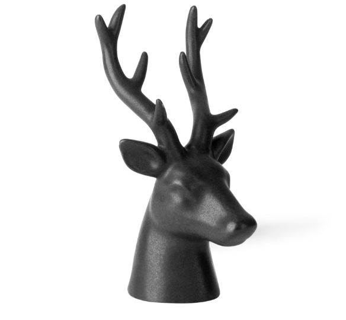

WASHINGTON OLIVEIRA
WEB DEVELOPEROlá e seja bem-vindo ao meu portfólio digital! Sou apaixonado por transformar ideias em experiências digitais incríveis. Como um web designer, meu objetivo é criar espaços virtuais que cativem, inspirem e deixem uma impressão duradoura.

Cada projeto que abordo é uma oportunidade para criar algo verdadeiramente especial. Minha abordagem é centrada no usuário, buscando sempre criar designs intuitivos e funcionais que proporcionem uma experiência única e envolvente.
Acredito que um site não é apenas uma presença online, mas uma narrativa interativa que pode transmitir uma mensagem, contar uma história e alcançar um público global.
Navegue pelo meu portfólio e explore uma variedade de projetos que abrangem desde sites corporativos elegantes até plataformas criativas e inovadoras. Cada pixel, cor e linha de código é escolhido com cuidado para garantir que cada projeto atenda aos mais altos padrões de qualidade.
“Se você está procurando um web designer que combina experiência com criatividade, você está no lugar certo.”